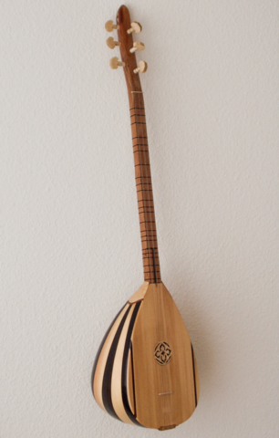
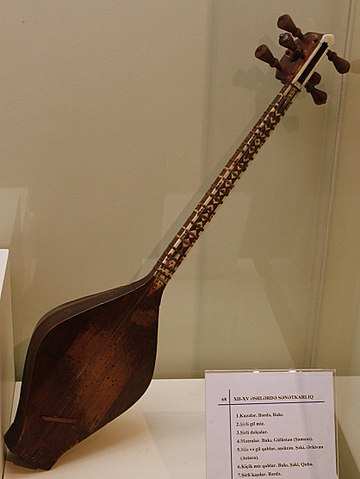
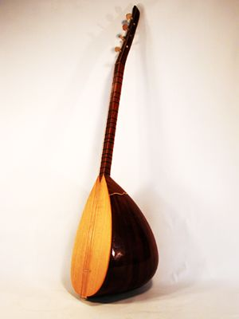
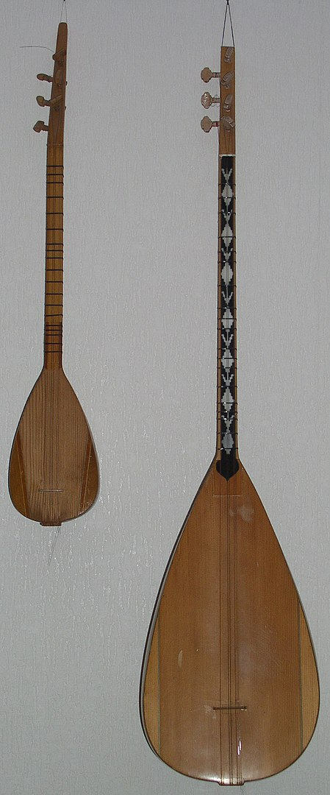
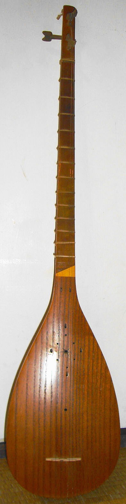
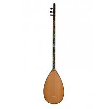
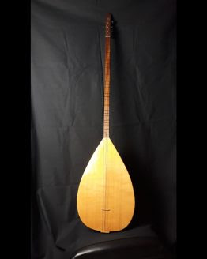

Bağlama Türleri
Bağlama, kullanım amaçlarına göre farklı tür ve boylarda çalınmaktadır. Günümüzde genellikle aşağıdaki türlerle tanınır.
Cura (en küçük boy)
Çöğür (kısa kol bağlama)
Kısa saplı bağlama (yakın zamanda geliştirilmiş bir bağlama türü)
Uzun Sap Bağlama
Tambura (uzun kol bağlama)
Divan sazı (büyük boy bağlama)
Meydan sazı (en büyük boy bağlama)
Cura

Cura, Yörük halk çalgılarından biridir. Akdeniz ozanları tarafından çoklukla kullanılan bu çalgının uzunluğu 55–60 cm kadardır
ve bağlama ailesinin en küçük çalgısıdır. Cura genellikle altı, beş, dört ya da üç tellidir. İki telli curalar da vardır. Bu
curaların alt teli "la", üst teli "re" sesine ayarlanmıştır. Curaların tekne derinlikleri ile göğüs genişlikleri 15 cm
dolayındadır. Sap uzunlukları ise 40 cm kadardır. Sapın ucundaki burgu denen anahtarlarla çalgı akort edilir. Dört telli
curalarda üstteki tel ahenk telidir. Öbür teller bu ahenk telinin sesine ayarlanır. Sapları kısa olduğu için curalarda az
sayıda perde bulunur.
Cura mızrapla ya da tellere parmakla vurularak çalınır. Ama genelde tek başına çalınan bir çalgı değildir. Yaygın olarak öbür sazlarla birlikte çalınır. Bağlamanın bir oktav tizine ayarlanan sesi, öbür sazların içinde belirginleşerek ezgiye hareket ve renk katar. Oyun havalarının kıvrak ve hareketli çalınış biçimine uygun bir çalgıdır.
Curalar büyüklüklerine göre değişik adlar alır. Curadan biraz büyük olanlara "cura bağlama" denir. Sesi curadan daha kalın olan cura bağlama en yaygın kullanılan cura türüdür. "Cura cura" ya da "cura zurna" adıyla bilinen tür ise curadan daha küçüktür ve sevimli görünüşü nedeniyle süs eşyası olarak çokça kullanılır.
Çöğür

Çöğür, iri gövdeli, kısa saplı bir tür halk sazıdır. Günümüzde "kısa sap" olarak anılan, 36 ilâ 42 tekne ölçüleri arasında değişen ve yukarıdan aşağıya la-sol-re düzeni ile çalınan bağlamanın, bağlama ailesi içindeki adı.
Çöğürün tanımı ile ilgili süregelen tartışmalar vardır. Bir tanıma göre çöğür, bağlama ailesinin en kıdemli çalgılarından sayılır. Divan sazı'na yakın büyüklükte, 9 ya da 6 tellidir. Çöğürle seslendirilen dinsel eserler, âyin havaları, semai, nefes gibi tasavvuf müziği eserleri, etkileyici bir hava yaratır. Bir diğer yaklaşıma göre ise, çöğür belli bir sazın adı değildir. Türkiye'nin çeşitli yerlerinde, çeşitli sazlara çöğür denildiği öne sürülmektedir. Güneyde (Adana, Mersin, Kahramanmaraş, Urfa, Diyarbakır) bozuk’a, on iki telli aşık sazlarına çöğür denilmektedir. Daha çok alevi türkülerinde ve deyişlerinde kullanılır.
Kısa saplı bağlama

Kısa saplı bağlama, bir bağlama türüdür. Bazen çöğür de denilmekteyse de çöğürün bağlamanın başka bir türü olduğu kanaati yaygındır. Uzun saplı bağlamanın bağlama düzeninde çeşitli zorluklar çıkarması nedeniyle baştaki si ve do perdeleri kesilerek kısa saplı bağlama oluşturulmuştur. Tekne boyu genellikle 38 – 42 cm arasında olur. Tel olarak alta iki adet 0,18 ve bir adet ince sırma, ortaya iki adet 0,25, en üste de bir adet 0,18 ve bir adet kalın sırma takılır. Alt teller re, orta teller sol, üst teller la olarak akortlanır. (Tunere göre A G D)
Kısa saplı bağlama sadece bağlama düzeninde çalmak için tasarlanmıştır. Öğrenilmesinin uzun saplı bağlamaya göre daha kolay ve kısa süreli olması, tellerine paralel basışlarda çıkan paralel ezgiler, uzun saplı bağlamada zorluk çıkaran ezgilerin kısa saplı bağlama ile daha rahat çalınabilmesi gibi nedenlerle kullanımı son yıllarda artmıştır. Ancak yöresel tavırların; misket, fidayda gibi diğer düzenlere uygun ezgilerin ve arabesk parçaların bu bağlama ile çalınamaması veya çalındığında estetik özelliklerini kaybetmesi dolayısıyla icrasının sınırları ve niteliği her zaman tartışma konusu olmuştur. Kısa saplı bağlama en fazla deyiş, semah ve özgün müzik türlerinde gerçek kapasitesini göstermektedir.
Uzun Sap Bağlama

Bağlama ya da saz, Türk halk müziğinde yaygın olarak kullanılan telli tezeneli bir çalgı türüdür. Tezene denilen kiraz ağacı kabuğundan yapılmış bir mızrapla tellere vurularak çalınır. Tekne bir kütükten oyulmuştur ve armut biçimindedir.
Kullanılan tekniğe göre mızrap (tezene) veya parmaklar ile çalınır. Parmaklarla çalma tekniğine şelpe ve dövme denir. Genellikle altta iki çelik ile bir sırma bam, ortada iki çelik ve üstte bir çelik ile bir sırma bam teli olmak üzere toplam 7 tellidir. Tezene ile çalınır.
Tambura

Tambura, Türk halk müziği çalgısı. Bağlamadan daha küçüktür. Divan sazından bir oktav tizdir ve divan sazının curası olarak bilinir. Bağlamadan da dört ses daha tizdir. Alt (re), orta (do) seslerine akort edilir. Form boyu 38 cm, sap boyu 50 cm, tel boyu 80 cm, form eni ve derinliği 22.8 cm'dir.
Divan sazı

Tekne boyu 48–52 cm, sap boyu 65–66 cm, tel uzunluğu 104-106 cm. dir. Alta iki 0.30 mm, ortaya bir tane 0.20 ve bir tane kalın sırma, üste ise bir tane 0.30 mm ve bir tane kalın bam teli takılır. Bağlamadan 5 ses pese akortlanır. Tanburu andıran tok ve mistik bir sesi vardır. Uzun hava açılışlarında kullanılmaya çok uygun bir sazdır.
TRT sanatçıları Ali Ekber Çiçek, Özay Gönlüm, Mehmet Erenler ve Mustafa Günaydın bu sazla özdeşleşmiş isimlerdir. Orhan Gencebay da daha küçük boyda bir türünü kullanmaktadır.
Meydan sazı

Meydan sazı, Türk Halk Müziği'nde yaygın olarak kullanılan telli tezeneli bir çalgı türü olan "bağlama"nın en büyük boyuna verilen isimdir.Bu saz genellikle genel yerlerde ve meydanlarda çalındığı için bu ismi almıştır.Bu "meydan sazı"na 12 telli saz da denmektedir.Çünkü meydan sazı 12 telden oluşmaktadır.Sapında genellikle 32 perde bulunur.En ince teli 35 numaradır.Meydan sazı davudi bir ses çıkarır.